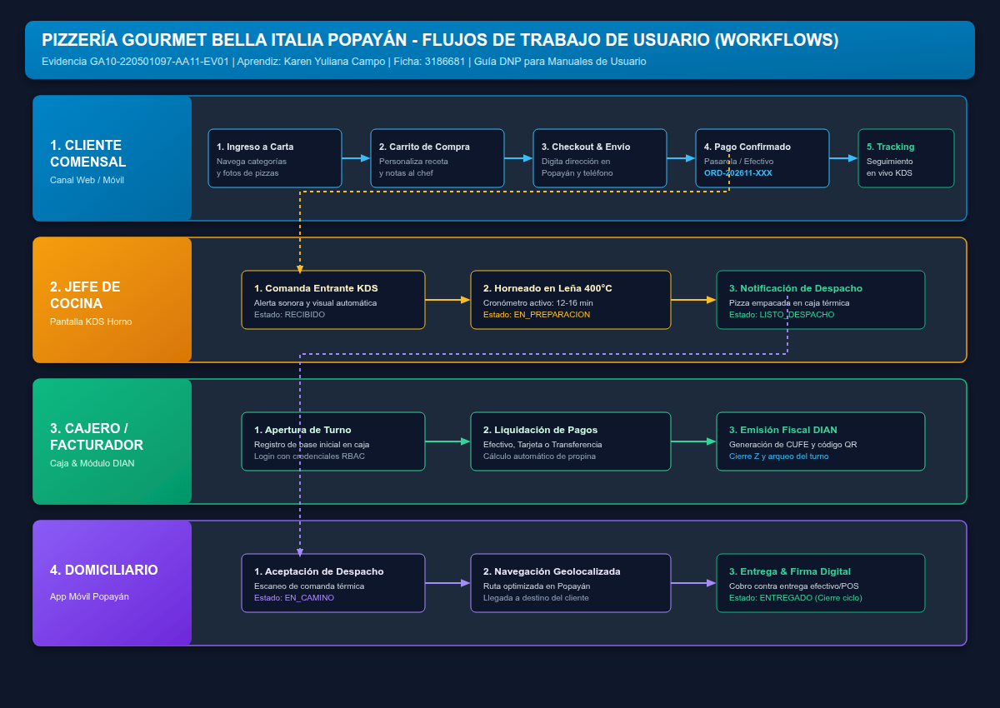

Roles de Usuario
Flujos Operativos
Navegación e Interfaz
Estándar de Manual
1. Guía de Uso de Funcionalidades por Rol
Guía DNP & Control de Acceso RBACEl software opera bajo un modelo de Control de Acceso Basado en Roles (RBAC), adaptando la interfaz según las responsabilidades operativas del usuario:
Usuario externo que navega la carta, arma pedidos y realiza compras en línea o mesa.
Funciones Clave:- Catálogo con fotos HD y alérgenos
- Carrito con notas al chef
- Checkout con geolocalización Popayán
- Seguimiento de orden en tiempo real
Operador de salón encargado de cobros presenciales y facturación electrónica DIAN.
Funciones Clave:- Apertura y cierre Z de caja
- Carga de comanda por mesa
- Emisión fiscal con CUFE y QR
- Gestión de pagos mixtos
Responsable de preparación de comandas en el horno de leña.
Funciones Clave:- Monitor de comandas KDS en vivo
- Cronómetro de tiempos de cocción
- Alertas sonoras de nuevos pedidos
- Cambio de estado a "Listo Despacho"
Repartidor de entregas geolocalizadas en Popayán.
Funciones Clave:- Recepción de pedidos empaquetados
- Mapa de ruta en Popayán
- Cobro contra entrega
- Firma digital del cliente
Supervisión gerencial de carta, precios, usuarios e inventario.
Funciones Clave:- Gestión de empleados y roles
- Actualización de precios y stock
- Métricas de ventas y DIAN
- Auditoría forense de logs
3. Instrucciones de Ingreso y Control de Acceso
Seguridad y Autenticación JWTGuía paso a paso para iniciar sesión, autenticarse de manera segura y gestionar credenciales en la plataforma:
A. Proceso de Inicio de Sesión (Login)
- Abra su navegador web y diríjase a
http://localhost:8100/. - Haga clic en el botón "Iniciar Sesión" ubicado en la esquina superior derecha.
- Ingrese su correo electrónico registrado (ej.
cajero@pizzeriabellaitalia.com). - Digite su contraseña confidencial y pulse "Acceder al Sistema".
- El sistema validará el token JWT y lo redirigirá al panel asignado según su rol.
B. Políticas de Seguridad de Acceso
- Cierre de Sesión Automático: La sesión expira tras 30 minutos de inactividad para prevenir accesos no autorizados.
- Bloqueo por Intentos Fallidos: Al tercer intento erróneo, la cuenta se bloquea preventivamente por 15 minutos.
- Recuperación de Contraseña: El usuario puede solicitar un enlace de restablecimiento seguro vía correo electrónico.
4. Instrucciones para Ingreso y Consulta de Información
Operaciones DiariasMecanismos para buscar platos, registrar nuevos pedidos, consultar facturas y actualizar estados:
A. Consulta y Búsqueda de Productos
Los usuarios comensales y cajeros pueden consultar el menú mediante tres métodos:
- Buscador en tiempo real: Digite el nombre de la pizza o ingrediente para filtrar al instante.
- Selector de categorías: Filtre por Tradicionales, Gourmet, Calzones o Bebidas.
- Filtro de alérgenos: Oculte platos que contengan gluten o lácteos.
B. Registro de Pedido y Checkout
Instrucciones para formalizar una compra:
- Revise el resumen del carrito con desglose de subtotal e IVA del 19%.
- Ingrese la dirección exacta en Popayán y referencias (ej. frente al parque Caldas).
- Seleccione el método de pago deseado y haga clic en "Confirmar Pedido".
5. Flujos de Trabajo Operativos (Workflows)
Modelado de ProcesosA continuación se presenta el diagrama general de flujos de trabajo de los roles del restaurante:

Flujo Paso a Paso: Pedido Online a Despacho
Paso 1: Selección y Carrito por el Comensal
El cliente comensal selecciona pizzas gourmet, especifica notas y completa el checkout web.
Paso 2: Alerta y Preparación en Cocina KDS
La orden entra a la pantalla de cocina. El chef pulsa iniciar preparación e ingresa la pizza al horno de leña.
Paso 3: Facturación Electrónica DIAN
Caja emite automáticamente la factura electrónica con CUFE y QR legal transmitido a la DIAN.
Paso 4: Entrega y Confirmación por Domiciliario
El domiciliario traslada el pedido empaquetado, cobra contra entrega y registra la firma digital del cliente.
6. Preguntas Frecuentes y Soporte Técnico (FAQ)
Mesa de Ayuda¿Qué hacer si el monitor de cocina KDS no emite sonido ante un nuevo pedido?
Verifique que el navegador tenga activados los permisos de reproducción automática de audio para el dominio localhost:8100 y compruebe la conexión WebSocket.
¿Cómo anular una factura emitida por error en caja?
El cajero debe solicitar autorización al Administrador, quien emitirá una Nota Crédito Electrónica en el módulo DIAN vinculada al número de factura original.
¿Cómo contactar al soporte técnico de la pizzería?
Línea directa: (602) 820-9900 | Correo: soporte@pizzeriabellaitalia.com | Horario: Lunes a Domingo 10:00 a 23:00 COT.